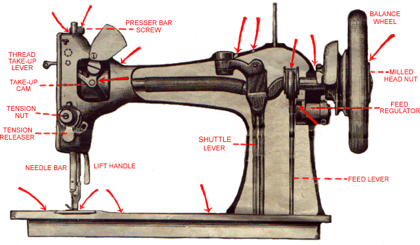
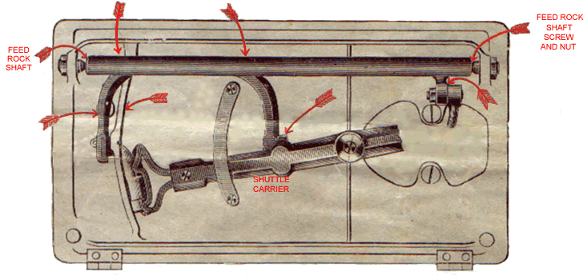
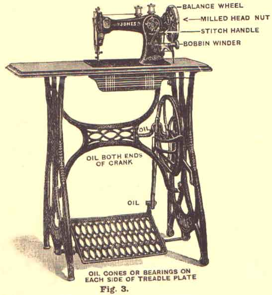

-
The TWO OIL HOLES marked in Dotted Circles are behind the Head of the Machine, and must be oiled OFTEN whilst Needle Bar is at its highest point. TAKE COVER OFF BACK OF TOP ARM to oil Feed Regulator.

Be sure and Oil the Cotton in the Hole under Front Shuttle-race Slide. The Arrows show where the Machine is to be oiled.
The Arrows show where the Machine is to be oiled

Fig 2
The Arrows show where the Machine is to be oiled
It is cheapest to use the BEST SPERM OIL ONLY. If the Machine or Stand runs heavy after standing, use Paraffin Oil [US = kerosene. AQ], run the Machine at a quick speed for a few minutes then clean the Paraffin Oil off and oil the Machine well with good Sperm Oil.
-
IF THE MACHINE OR STAND RUNS HEAVY AFTER STANDING, use PARAFFIN OIL, run the Machine at a quick speed for a few minutes, then clean the Paraffin Oil off, and oil the Machine well with GOOD SPERM OIL

USE NON BUT THE VERY BEST SPERM OIL; IT IS BY FAR THE CHEAPEST IN THE END
Oil both ends of the Fly-wheel Crank Centres; oil Pitman (top and bottom); oil Cones or Bearings on each side of Treadle Plate.
The balls in the ball-bearing stand should be kept clean and free from dirt, so that they will work freely. This can be done by occasionally cleaning them with paraffin.
Do not have the Belt too tight, it makes the Machine run heavy. If the belt becomes too slack, cut a little off the end.
-
At the end of the Shaft near the Balance Wheel (see illustration, Page 1, Fig. 3), will be found a Milled Head Nut. By turning this Milled Head Nut towards you this will disconnect the Balance Wheel.
[Note -- This type of friction clutch is only found on the earliest Jones CS machines. From 1895 on this was replaced with a catch plate lever. A.Q.]
Place the feet lightly upon the Treadle, then turn towards you the Balance Wheel on the top of the Machine, allowing the feet to move freely with the motion thus given. Continue this motion, by pressing with the heel and toe alternately until a regular movement is acquired.
Make yourself thoroughly familiar with the treadle motion before attempting to use the machine, and take particular notice that the Balance Wheel must turn towards you.
The following table indicates the sizes of Needles and Threads which should be employed together, and in transmitting orders for Needles, to prevent mistakes and delay, always specify the size required, and state for
JONES' C.S. MACHINE
|
SIZE OF NEEDLE
|
CLASS OF WORK TO SEW
|
SIZES OF COTTON< LINEN OR
SILK
|
|
1
|
|
200 Cotton
|
|
2
|
Very Fine Calicoes, Linen, Linen Shirting, Fine Silk
Goods, Tucking, Hemming, &c.
|
100 to 150 Cotton
|
|
3
|
Underclothing, Collars, Fine Shirts, Handkerchiefs,
&c.
|
80 to 100 Cotton, 24 to 30 Silk
|
|
4
|
Dressmaking, Quilting, Bleached Calicoes, and General
Domestic Sewing.
|
60 to 80 Cotton, 24 to 30 Silk
|
|
5
|
Heavier Grades Dressmaking, and Boys Clothing, &c.
|
40 to 60 Cotton, 24 to 30 Silk, 80 to 100 Linen.
|
|
6
|
Light Tailoring, Mantle-making, &c.
|
30 to 40 Cotton, 16 to 24 Silk, 70 to 80 Linen
|
|
7
|
Heavy Coats, Trouserings, Tickings, &c.
|
24 to 30 Cotton, 60 to 80 Linen
|